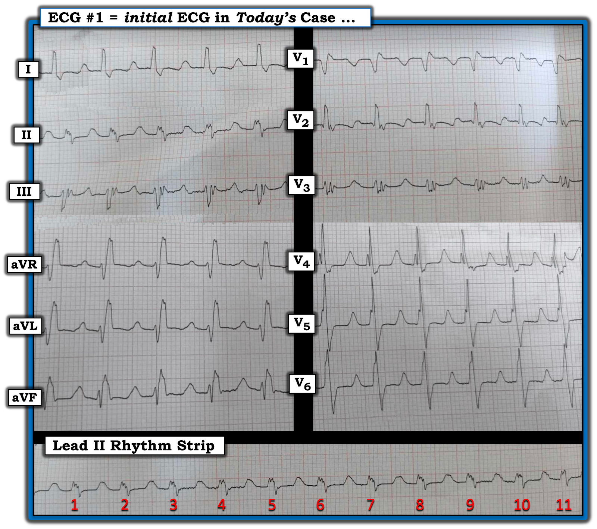
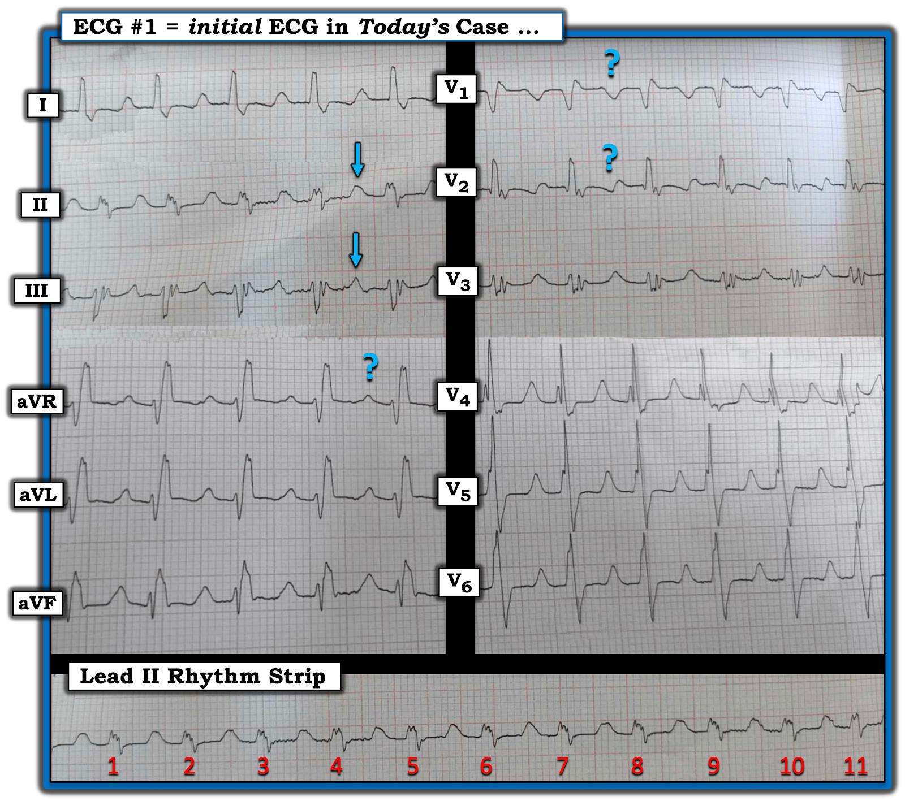
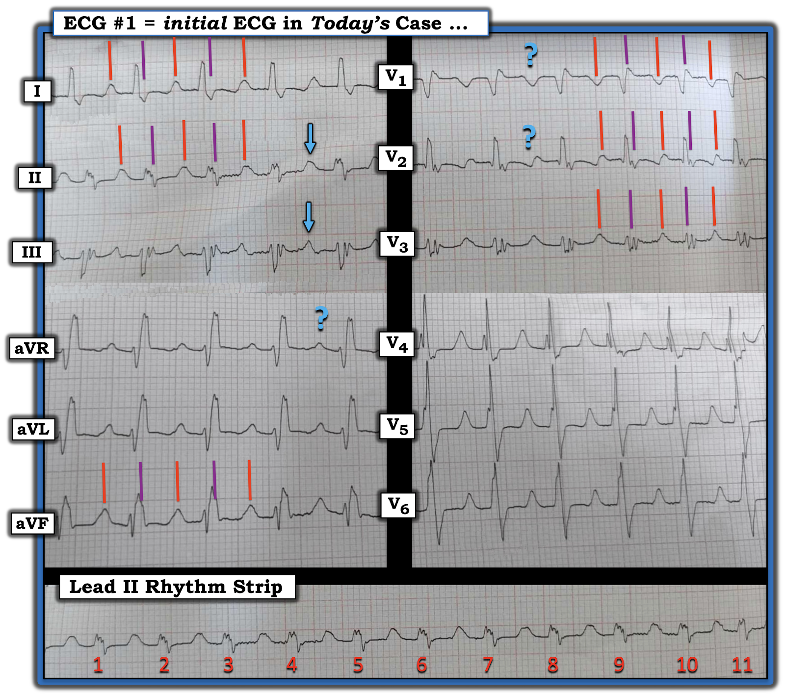
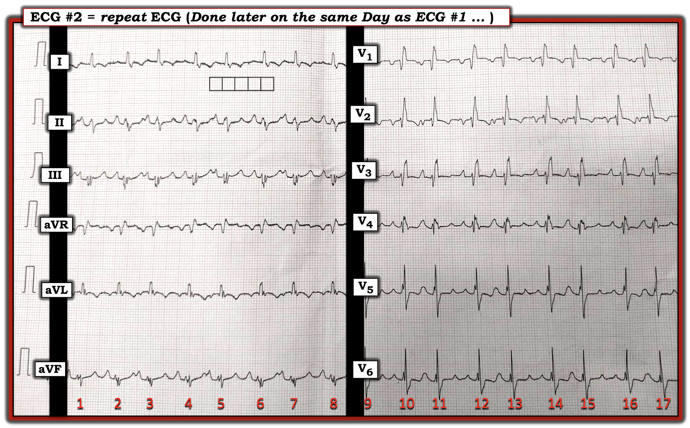
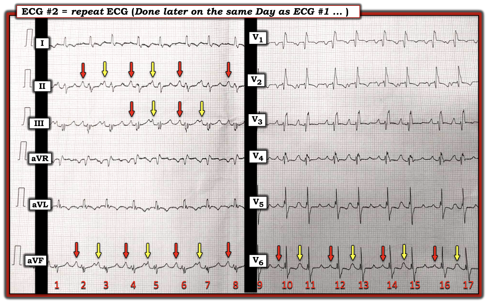
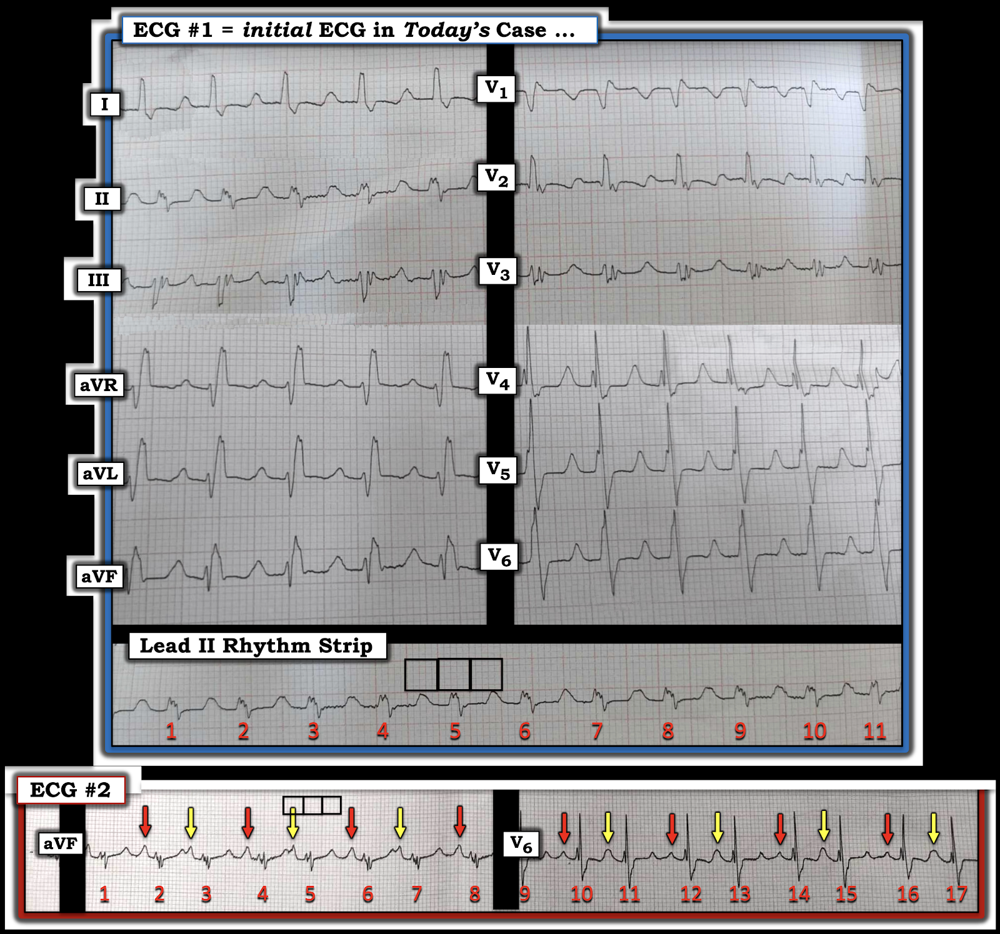
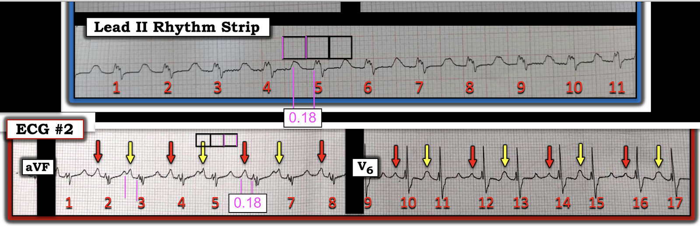

ECG Blog #425 — Có sóng P không?
Tôi được gửi điện tâm đồ ở Hình 1 — chỉ được biết bệnh nhân 70 tuổi và có tiền sử thông liên nhĩ – ASD (Atrial Septal Defect).
- Kali máu (K+) bình thường.
- Bệnh nhân ổn định huyết động với điện tâm đồ #1.
CÂU HỎI:
- BẠN sẽ đọc nhịp như thế nào ở Hình 1?
- Có sóng P không?


SUY NGHĨ Ban đầu CỦA TÔI về CA BỆNH Hôm nay:
Việc biết bệnh nhân hôm nay có tiền sử ASD (Atrial Septal Defect) — có liên quan đến việc đọc bản ghi thú vị hôm nay!
- Có nhiều biến thể của ASD — với mức độ nặng của bệnh lý này và độ tuổi bệnh nhân đến khám phụ thuộc vào nhiều yếu tố. Đáng ngạc nhiên là bệnh nhân ASD có thể đến khám ở bất kỳ độ tuổi nào.
- Nhiều bệnh nhân trải qua nhiều năm mà không có triệu chứng đáng kể. Dù vậy — phần lớn bệnh nhân cuối cùng đều sẽ có triệu chứng (Webb và Gatzoulis: Circulation 114: 1645-1653, 2006).
- ĐIỂM THEN CHỐT (PEARL) #1: Do bệnh nhân ASD có thể có diễn tiến kéo dài — điều quan trọng là cần hiểu rằng việc không có triệu chứng không nhất thiết loại trừ khả năng có bệnh tim gây ảnh hưởng huyết động đáng kể.
- ĐIỂM THEN CHỐT (PEARL) #2: Điện tâm đồ có thể cung cấp manh mối về mức độ nặng tiềm ẩn của ASD ở từng bệnh nhân — đặc biệt ở bệnh nhân người lớn không có triệu chứng rõ rệt. Vì vậy, việc phát hiện bất kỳ dấu hiệu nào sau đây đều có thể báo trước bệnh lý nền nặng hơn: i) Rối loạn nhịp (tức là blốc AV; AFib/AFlutter; các rối loạn nhịp nhĩ khác); ii) Dấu hiệu RVH và/hoặc tăng áp phổi (RAA, trục lệch phải, sóng R cao và/hoặc dạng qR ở chuyển đạo V1; thay đổi ST-T do "tăng gánh" thất phải; RBBB không hoàn toàn hoặc hoàn toàn); và/hoặc iii) LVH.
- Do sự phức tạp của nhiều khía cạnh trong quản lý ASD suốt cuộc đời bệnh nhân — khuyến cáo chăm sóc suốt đời theo mô hình bệnh tim bẩm sinh người lớn – CHD (Congenital Heart Disease), vì việc xác định thời điểm phẫu thuật sửa chữa ở tuổi trưởng thành là một quyết định rất khó khăn (Cotts — Eur Heart J 43:2260-2671, 2022 — và — Lopes và Mesquite — Arq Bras Cardiol 103(6):446-448, 2014).
- LƯU Ý: Để biết thêm về cách nhận diện RVH và/hoặc tăng áp phổi trên điện tâm đồ (liên quan đến dạng qR ở chuyển đạo V1) — Xem ECG Blog #234 và Blog #248.
Về điện tâm đồ ban đầu ở Hình 1:
Dù nhận thấy điện tâm đồ #1 có một số lỗi kỹ thuật (bản ghi hơi bị gấp và bị nghiêng — do đó các số đo bị méo phần nào) — dường như có một nhịp nhanh QRS rộng đều – WCT (Wide-Complex Tachycardia) với tần số ~135/phút, nhưng không có dấu hiệu rõ ràng của sóng P xoang.
- Tôi đã đánh dấu điện tâm đồ ban đầu ở Hình 2 — để làm nổi bật những điểm tôi còn chưa chắc chắn khi đánh giá bản ghi này. Cụ thể — tôi hoàn toàn không chắc liệu các mũi tên và dấu hỏi màu XANH DƯƠNG là sóng P với khoảng PR dài — hay — là sóng T của QRS đứng trước với QTc dài — hay — là sự kết hợp của sóng T đang "hòa lẫn" với hoạt động nhĩ bên dưới?
- Điểm MẤU CHỐT: Do QRS giãn rộng rõ ràng ở điện tâm đồ #1 — việc phân biệt sóng P với sóng T với sự kết hợp của cả hai là yếu tố thiết yếu để xác định nhịp hôm nay nhiều khả năng là trên thất hay VT (Ventricular Tachycardia).
- ĐIỂM THEN CHỐT (PEARL) #3: Việc biết bệnh nhân hôm nay có ASD khiến tôi nghi ngờ một dạng SVT (SupraVentricular Tachycardia) nào đó thay vì VT, vì rối loạn dẫn truyền kiểu RBBB rất thường gặp ở bệnh nhân có ASD đáng kể. Và mặc dù hình dạng QRS ở Hình 2 có phần bất thường — các dấu hiệu QRS giãn rộng với dạng QR ở chuyển đạo V1, kèm sóng S tận rộng ở các chuyển đạo bên I và V6 — đặc biệt khi có phân mảnh (khía) rõ rệt ở nhiều chuyển đạo — hoàn toàn có thể phù hợp với CHD người lớn, trong đó bệnh nhân có ASD lâu năm, gây ảnh hưởng huyết động đáng kể, kèm bất thường cấu trúc nền đáng kể.


ĐIỂM THEN CHỐT (PEARL) #4: Nếu các mũi tên và dấu hỏi màu XANH DƯƠNG ở Hình 2 là do sóng P xoang (có lẽ đang hòa lẫn với sóng T đứng trước) — thì khoảng PR sẽ bị kéo dài.
- Dù vậy, khi tần số nhịp xoang tăng — khoảng PR có xu hướng ngắn lại, có lẽ do giảm trương lực phế vị nền. Vì thế, hiếm khi gặp nhịp nhanh xoang kèm khoảng PR kéo dài.
- Tuy có một số bệnh nhân vốn có khoảng PR kéo dài từ nền, vẫn tiếp tục biểu hiện PR kéo dài ở một mức độ nào đó khi nhịp nhanh xoang — nhưng phần lớn các nhịp nhanh dường như có "sóng P xoang" ở gần điểm giữa khoảng R-R hóa ra lại là dẫn truyền AV 2:1 (do ATach hoặc AFlutter).
- Như đã bàn trong ECG Blog #227 — nguyên tắc này được gọi là Quy tắc Bix, đặt theo tên nhà tim mạch học người Vienna, người đầu tiên cảnh báo không nên "chấp nhận" chẩn đoán "nhịp nhanh xoang kèm blốc AV độ 1" trước khi tìm kỹ một sóng P "thừa" ẩn trong phức bộ QRS.
- Điểm MẤU CHỐT: Nếu tôi xác định được hoạt động nhĩ 2:1 — điều này gần như sẽ khẳng định nghi ngờ của tôi rằng nhịp hôm nay là một dạng nào đó của SVT (và không phải VT) — vì việc hoạt động nhĩ 2:1 tình cờ xảy ra đồng thời với một VT có thời điểm trùng khớp hoàn hảo là cực kỳ hiếm.
Tìm sóng P thừa:
Tôi minh họa ở Hình 3 — cách đánh giá khả năng có hoạt động nhĩ 2:1 trong bản ghi hôm nay.
- NẾU bản ghi hôm nay là một SVT với dẫn truyền AV 2:1 (do ATach hoặc AFlutter) — thì ta sẽ mong thấy bằng chứng của một sóng lệch nhĩ bổ sung (sóng P hoặc sóng cuồng nhĩ) tại điểm nằm chính xác ở giữa các sóng lệch nhĩ liên tiếp (tức là giữa các vạch ĐỎ liên tiếp ở Hình 3).
- Trong khi không thể biết liệu có một sóng lệch nhĩ thừa nằm dưới các vạch TÍM ở chuyển đạo aVF và V3 hay không (vì vạch TÍM rơi vào giữa QRS ở các chuyển đạo này) — thì tôi lẽ ra phải thấy một dạng sóng lệch dương nào đó dưới mũi tên TÍM ở chuyển đạo I và V2 nếu có hoạt động nhĩ 2:1.
- ĐIỀU CỐT LÕI: Dù cần cân nhắc khả năng nhịp SVT với dẫn truyền AV 2:1 ở Hình 3 — tôi không thấy bằng chứng nào ủng hộ giả thuyết này.


==================================
Tổng Hợp Lại Tất cả:
Tại thời điểm này trong quá trình đánh giá nhịp hôm nay — tôi hoàn toàn thừa nhận rằng tôi không biết chắc chắn căn nguyên của rối loạn nhịp này.
- Tôi đã xác định nhịp hôm nay là một WCT đều với tần số ~135/phút — nhưng hoạt động nhĩ không chắc chắn (nếu có). Chẩn đoán phân biệt là giữa một dạng SVT nào đó với VT (nhất là khi chúng tôi được cho biết kali máu bình thường).
- Với tiền sử ASD — tôi nghĩ SVT có khả năng cao hơn VT, vì hình dạng QRS của nhịp hôm nay có vẻ phù hợp với CHD người lớn ở bệnh nhân có bệnh cấu trúc nền lâu năm (tức là với dạng QR giãn rộng ở chuyển đạo V1 — kèm sóng S tận rộng ở các chuyển đạo bên + phân mảnh rõ rệt của nhiều phức bộ QRS).
- Tôi đã hy vọng tìm được bằng chứng của hoạt động nhĩ 2:1 — vì nếu có, điều này gần như sẽ khẳng định nhịp hôm nay là nhịp trên thất. Đáng tiếc — việc tìm hoạt động nhĩ 2:1 của tôi (như trình bày ở Hình 3) đã không thành công.
- Đây có thể là thời điểm tối ưu để thử chuyển đạo Lewis — đôi khi giúp bộc lộ hoạt động nhĩ không thấy rõ với vị trí đặt điện cực chuẩn (Xem ECG Blog #223).
- Tìm được một bản ghi trước đây của bệnh nhân hôm nay cũng có thể rất hữu ích — đặc biệt nếu ở tần số tim chậm hơn với nhịp xoang, vẫn thấy hình dạng QRS giống như ở Hình 3. Đáng tiếc — vào lúc này không có bản ghi cũ nào.
- "Tin tốt" — là bệnh nhân hôm nay ổn định huyết động, nghĩa là ít nhất vẫn còn một khoảng thời gian để cố gắng xác định chắc chắn hơn căn nguyên của nhịp.
- Tìm hiểu thêm về tiền sử bệnh nhân có thể rất hữu ích.
CA BỆNH Tiếp diễn:
- Đã tìm được hồ sơ bệnh án của bệnh nhân. Siêu âm tim gần đây cho thấy một lỗ ASD thể lỗ thứ phát (Ostium Secundum) lớn — với luồng thông trái-phải và giãn rất lớn các buồng tim phải.
- Hóa ra bệnh nhân đã có triệu chứng — với khó thở khi gắng sức tăng dần trong vài tháng qua.
Điện tâm đồ ban đầu được ghi lại — và được trình bày ở Hình 4.
CÂU HỎI:
- Bạn sẽ đọc điện tâm đồ ghi lại ở Hình 4 như thế nào?
- Điện tâm đồ #2 có làm rõ nhịp ban đầu là gì không?


SUY NGHĨ CỦA TÔI về điện tâm đồ ghi lại ở Hình 4:
Để các số đo ở điện tâm đồ #2 được rõ ràng — tôi đã vẽ 5 ô lớn trên lưới điện tâm đồ (nằm giữa chuyển đạo I và II ở Hình 4). Lưu ý khi so sánh bản ghi lặp lại này với điện tâm đồ ban đầu trong ca hôm nay — do điện tâm đồ #2 ghi được nhiều nhát hơn hẳn, nên kích thước tương đối của một ô lớn trên giấy lưới điện tâm đồ khác nhau giữa 2 bản ghi này.
- Nhịp theo nhóm (group beating) dưới dạng nhịp đôi (bigeminal) (các khoảng R-R ngắn hơn rồi dài hơn xen kẽ nhau) có mặt ở điện tâm đồ #2. Nhịp đôi này dễ nhận thấy nhất ở chuyển đạo V5, V6.
- Nhịp xoang đã được phục hồi! (Các mũi tên ĐỎ ở Hình 5 cho thấy các sóng P rõ nét ở nhiều chuyển đạo trên điện tâm đồ ghi lại này — với việc trở về nhịp xoang được xác định bởi sự hiện diện của sóng P dương với khoảng PR cố định ở chuyển đạo II).
- Cứ cách một nhát ở Hình 5 lại là một PAC (được đánh dấu bằng mũi tên VÀNG, cho thấy hình dạng sóng P khác biệt nhẹ nhưng thực sự ở các PAC này — rõ ràng hẹp hơn các sóng P mũi tên ĐỎ của nhát xoang).


KẾT LUẬN CA BỆNH:
Việc so sánh 2 điện tâm đồ trong ca hôm nay cho phép chẩn đoán xác định nhịp ở điện tâm đồ ban đầu một cách hồi cứu. Hãy xem Hình 6:
==========================
- Xin LƯU Ý ở Hình 6: Khi so sánh chuyển đạo aVF và V6 của điện tâm đồ #2 — với điện tâm đồ #1 — kích thước tương đối của một ô lớn trên giấy lưới điện tâm đồ trong hình minh họa của tôi khác nhau giữa điện tâm đồ #1 và điện tâm đồ #2.
=================
- Chính vì tần số tim chung đã chậm lại ở điện tâm đồ #2 — mà chúng ta có thể thấy sóng P xoang lộ ra từ chỗ chúng ẩn trong sóng T đứng trước. Sóng P xoang (mũi tên ĐỎ) giờ đây thấy rõ ở các nhát số chẵn ở chuyển đạo aVF và V6 của bản ghi lặp lại này.
- Chúng ta có thể thấy sóng P nhọn của các PAC ở chuyển đạo aVF của điện tâm đồ #2 (mũi tên VÀNG).
- Tuy nhiên, ở chuyển đạo V6 — chúng ta không thể phân biệt rõ sóng P của các PAC, vì các PAC mũi tên VÀNG này ở chuyển đạo V6 "hòa lẫn" với sóng T đứng trước.
- Bây giờ hãy hình dung bằng "con mắt tưởng tượng" của bạn, nếu tần số của nhịp đôi nhĩ ở chuyển đạo aVF của điện tâm đồ #2 nhanh hơn một chút. Chẳng phải sự hòa lẫn của sóng P xoang mũi tên ĐỎ ở chuyển đạo aVF với sóng T đứng trước chúng sẽ tạo ra hình ảnh sóng P và sóng T hòa lẫn tương tự như ở chuyển đạo aVF của điện tâm đồ #1 hay sao?
- ĐIỀU CỐT LÕI: Nhìn lại — việc trở về nhịp xoang kèm nhịp đôi nhĩ ở điện tâm đồ #2 gợi ý mạnh rằng nhịp ở điện tâm đồ #1 là nhịp nhanh xoang ~135/phút, trong đó sóng P cao, nhọn ở các chuyển đạo dưới do ASD lâu năm của bệnh nhân này đã hòa lẫn với sóng T đứng trước, tạo nên hình dạng QRS bất thường ở điện tâm đồ #1.
- ĐIỂM THEN CHỐT (PEARL) #5: MẤU CHỐT để chứng minh cơ chế của một nhịp nhanh là nhịp xoang — là theo dõi điện tâm đồ thường xuyên, vì một khi nguyên nhân của nhịp nhanh xoang được điều trị, tần số nhịp nhanh sẽ chậm lại đủ để sóng P xoang lộ ra từ chỗ chúng ẩn trong sóng T đứng trước. Đây chính xác là điều chúng ta thấy ở Hình 6.


=================================
PHẦN BỔ SUNG (ngày 14 tháng 4 năm 2024):
Dựa trên một số câu hỏi được đặt ra về khoảng PR ở điện tâm đồ #1 và điện tâm đồ #2 — tôi đã bổ sung Hình 7, hy vọng sẽ làm rõ phần bàn luận của tôi.
- Tôi hoàn toàn thừa nhận rằng sự khác biệt về kích thước lưới điện tâm đồ ở 2 bản ghi tôi trình bày ở đây có thể gây nhầm lẫn. Thay vì số hóa cả hai bản ghi (điều có nguy cơ đưa vào sai số vốn có khi số hóa các số đo nhỏ từ những điện tâm đồ không hoàn toàn phẳng và không hoàn toàn thẳng) — tôi nghĩ tốt hơn là trình bày các điện tâm đồ gốc.
- Tôi đã thêm các vạch HỒNG ở Hình 7 để cho thấy, theo số đo của tôi — khoảng PR ở điện tâm đồ ban đầu (TRÊN = dải nhịp chuyển đạo II) đo được chưa tới 1 ô lớn (tương ứng với khoảng PR = 0.18 giây).
- Theo số đo của tôi — đây cũng chính là cùng khoảng PR ( = 0.18 giây) mà tôi đo được ở các nhát xoang (sóng P mũi tên ĐỎ) ở chuyển đạo aVF của điện tâm đồ #2.
- Khoảng PR của các PAC (sóng P mũi tên VÀNG) ở điện tâm đồ #2 có vẻ dài hơn một chút — nhưng thời gian PR của PAC có thể thay đổi tùy theo vị trí trong tâm nhĩ nơi PAC phát sinh, cũng như tốc độ dẫn truyền qua tâm nhĩ, vốn có thể bị thay đổi do các xung động trên thất này xuất hiện sớm.
- ĐIỀU CỐT LÕI: Tôi ước gì mình có thêm bản ghi. Tôi ước có những bản ghi được quét hoàn toàn phẳng và thẳng. Và tôi ước có ghi nhận theo dõi điện tâm đồ ngay trước — và trong — và ngay sau khi nhịp chuyển từ nhịp nhanh đều ở điện tâm đồ #1 — sang nhịp đôi ở điện tâm đồ #2. Đáng tiếc — tôi không có những thông tin này.
- Dù vậy — tôi nghĩ phần bàn luận của tôi trong ca hôm nay là một lời giải thích hợp lý dựa trên 2 bản ghi tôi có (trong đó tôi tin rằng khoảng PR là gần như giống nhau đối với các nhát dẫn truyền từ xoang ở điện tâm đồ #1 và #2). Nhưng tôi hoàn toàn thừa nhận rằng có thể có những cách giải thích khác.
Như thường lệ — Rất hoan nghênh ý kiến bình luận từ bạn đọc! — :)


==================================
Lời cảm ơn: Xin cảm ơn Ella Hmayer (đến từ Tunisia) đã gửi ca bệnh và bản ghi này.
==================================
Các bài ECG Blog liên quan đến ca hôm nay:
- ECG Blog #185 — Ôn lại hệ thống đọc nhịp của tôi, dùng cách tiếp cận Ps, Qs & 3R.
- ECG Blog #205 — Ôn lại Cách tiếp cận hệ thống của tôi trong đọc điện tâm đồ 12 chuyển đạo.
- ECG Blog #210 — Ôn lại phương pháp Cách-Một-Nhát (hoặc Cứ-Mỗi-Ba-Nhát) để ước tính tần số tim nhanh — và bàn về một ca khác có nhịp WCT đều.
=================================
- BẤM VÀO ĐÂY — để xem 6 Video ECG mới (về đọc nhịp — đọc điện tâm đồ 12 chuyển đạo với các ca lâm sàng về chẩn đoán bằng điện tâm đồ OMI cấp) của tôi.
- BẤM VÀO ĐÂY — để nghe 2 Podcast ECG mới (về các lỗi khi đọc điện tâm đồ & nhịp — và — các lỗi khi đánh giá OMI cấp) của tôi.
=================================
- ECG Blog #220 — và ECG Blog #361 — Ôn lại cách tiếp cận WCT ( = Wide-Complex Tachycardia – nhịp nhanh QRS rộng) đều.
- ECG Blog #196 — Ôn lại một ca khác có nhịp WCT đều.
- ECG Blog #263 và Blog #283 — Thêm các nhịp WCT ...
- ECG Blog #227 — Ôn lại "Quy tắc Bix" (Tìm hoạt động nhĩ 2:1 khi thấy khoảng PR dài trong một nhịp nhanh).
- Để biết thêm về ASD ở người lớn — Webb và Gatzoulis: Circulation 114: 1645-1653, 2006.
- ECG Blog #197 — Ôn lại khái niệm VT vô căn, trong đó VT phân nhánh là một trong 2 thể thường gặp nhất.
- ECG Blog #346 — Ôn lại một ca LVOT VT (một thể VT vô căn ít gặp hơn).
- ECG Blog #204 — Ôn lại chẩn đoán điện tâm đồ các blốc nhánh (RBBB/LBBB/IVCD).
- ECG Blog #203 — Ôn lại chẩn đoán trục và các blốc phân nhánh trên điện tâm đồ. Để ôn lại hình dạng QRS trong các blốc hai phân nhánh (RBBB/LAHB; RBBB/LPHB) — Xem Video Pearl trong bài blog này.
- ECG Blog #211 — TẠI SAO lại xảy ra dẫn truyền lệch hướng?
- ECG Blog #301 — Ôn lại một WCT là nhịp trên thất! (với RẤT NHIỀU nội dung về dẫn truyền lệch hướng).
- ECG Blog #323 — Ôn lại VT phân nhánh.
- ECG Blog #38 và Blog #85 — Ôn lại VT phân nhánh.
- ECG Blog #278 — Một ca khác có nhịp WCT đều ở một người trưởng thành trẻ tuổi hơn.
- ECG Blog #361 — Một WCT đều ở một người đàn ông trung niên.
- ECG Blog #35 — Ôn lại RVOT VT.
- ECG Blog #42 — Ôn lại các tiêu chuẩn phân biệt VT với dẫn truyền lệch hướng.
- ECG Blog #422 — Ôn lại một ca khác về bệnh tim bẩm sinh người lớn.